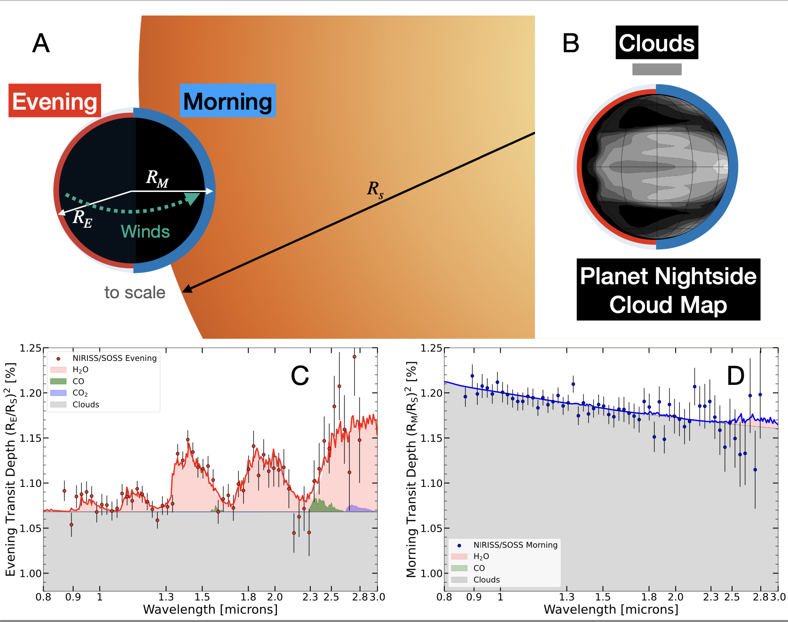
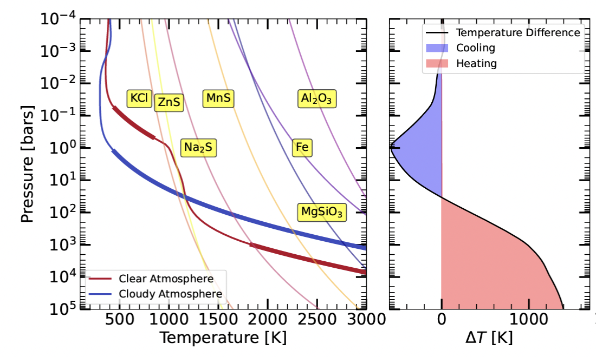
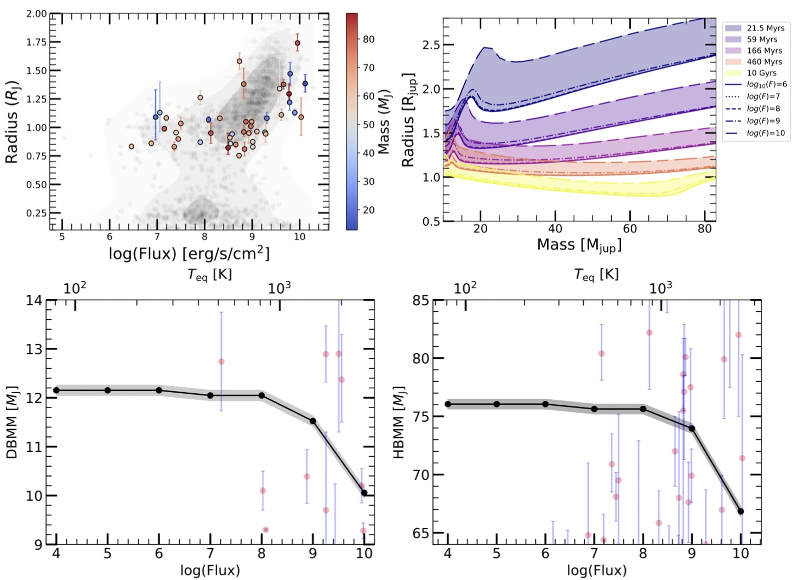
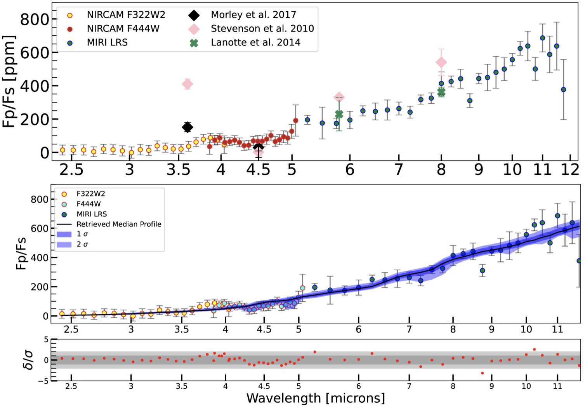
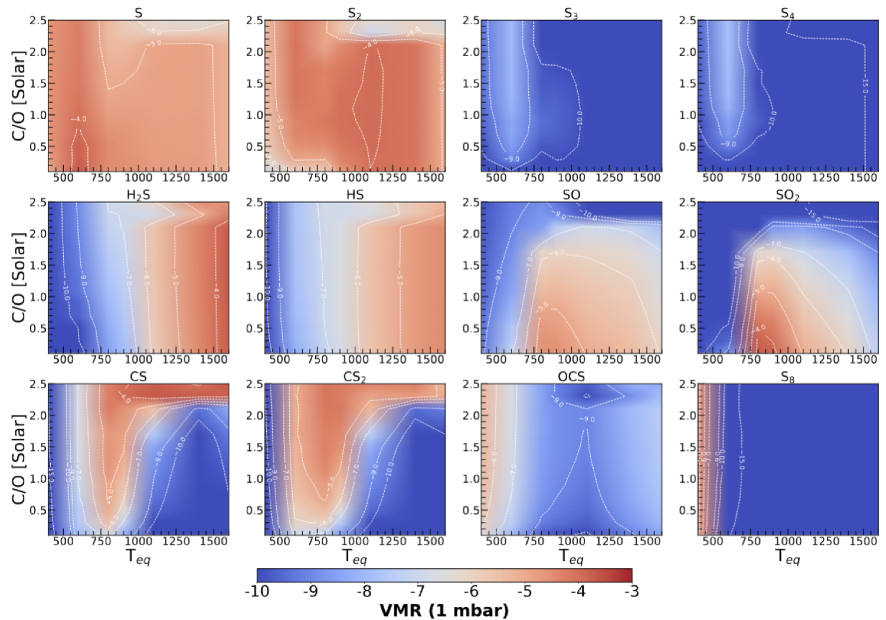
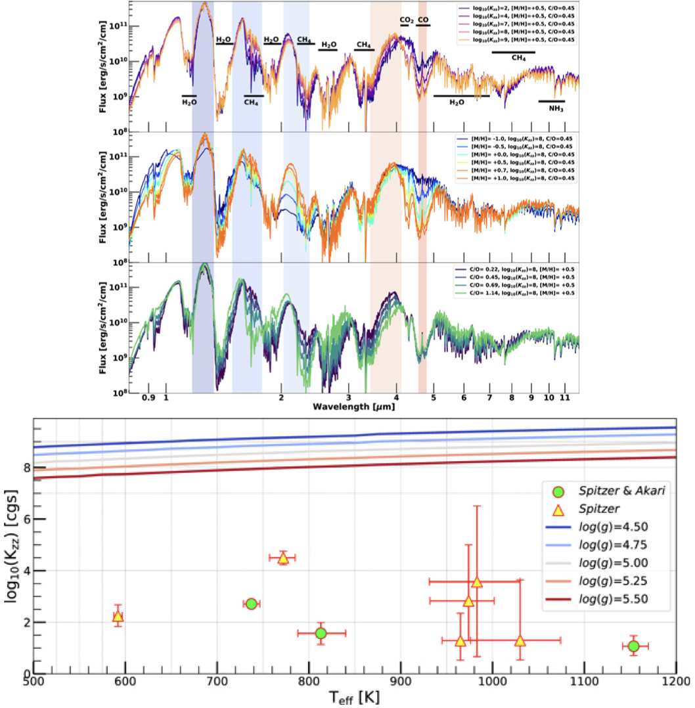
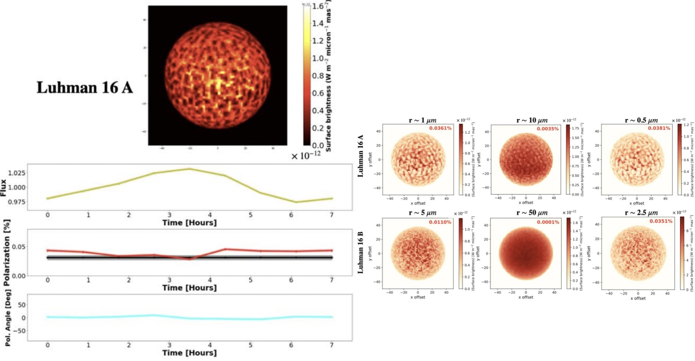
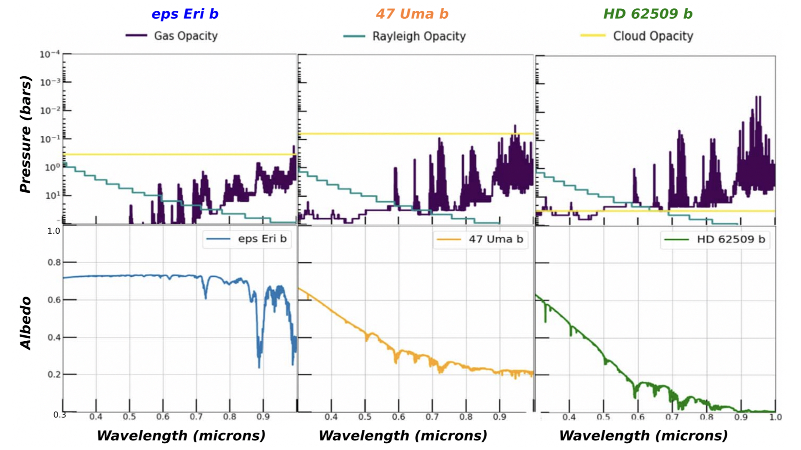
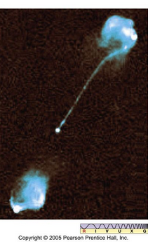

Exoplanet Atmospheres
Exoplanets are planets that orbit stars other than our Sun, and they have revolutionized our ability to understanding how planets form, evolve, and become habitable. Because atmospheres are often the only directly observable part of an exoplanet, they provide a powerful gateway to a planet’s chemistry, climate, and energy budget, as well as the fingerprints of its interior, evolution, and formation history. My research turns high-precision exoplanet spectra into physical understanding by bridging theory and observations across a wide range of substellar worlds, from brown dwarfs and giant exoplanets to sub-Neptunes and, ultimately, terrestrial planets. I build physics-driven atmosphere, climate, and interior modeling frameworks that predict transmission, emission, and reflected-light signals, and I use data from JWST and HST, along with premier ground-based facilities (Gemini, Keck, Subaru, and more), to test and constrain these models. A core theme of my work is connecting what we observe in an atmosphere to the hidden processes that shape it. I develop next-generation models to constrain atmospheric circulation and 3D structure, quantify how clouds and aerosols shape exoplanet atmospheres and bias composition measurements, and identify spectral tracers that reveal the properties of planetary interiors and their evolution—especially for sub-Neptunes, where interior–atmosphere coupling may regulate climate and habitability. I also lead open, reproducible exoplanet science through the widely used PICASO modeling suite. My goal is to help move the field from detection to diagnosis: transforming exoplanets from catalog entries into dynamic, physically understood worlds, and laying the theoretical foundation needed to interpret the coming era of atmospheric surveys with JWST, ARIEL, the ELTs, and future reflected-light missions. If you also find yourself wondering about the nature of these faraway worlds, their atmospheres, and what they can teach us, I would love to connect!
Cloudy Mornings and Clear Evenings on giant Exoplanet WASP-94A b


WASP-94A b is a near-Saturn-mass planet with a Jupiter-sized (or larger) radius. Using JWST/NIRISS transmission spectroscopy, we discovered a dramatic morning-evening terminator asymmetry: the morning limb is completely aerosol-dominated and shows essentially no molecular absorption, while the evening limb is comparatively clear and exhibits strong water-vapor features. While earlier work has reported terminator differences driven by chemistry and temperature (e.g., Espinoza et al. 2024; Murphy et al. 2024; Ehrenreich et al. 2020), this is the first direct evidence that the aerosol properties themselves differ between the two limbs, pointing to condensed clouds, not photochemical hazes, as the dominant aerosol source in this atmosphere. We infer that cloud particles are lofted to unusually high altitudes on the cooler morning side but evaporate at the hotter evening terminator, enabling us to constrain the planet's cloud transport pattern, limb-to-limb temperature gradients, and key cloud-circulation timescales. This inhomogeneous cloud coverage also produces large retrieval biases, shifting inferred chemical abundances by >4σ, showing that ignoring limb asymmetries can lead to misleading atmospheric compositions. The WASP-94A b study is now published in Science; the link to the article is Mukherjee et al. (2026b). In a follow-up study, we show this behavior is common (though not universal) across JWST hot-Jupiter transmission spectra: morning limbs tend to look more muted by aerosols, while evening limbs are often clearer, making WASP-94A b a benchmark for this cloudy/clear pattern (Fu, Mukherjee et al. 2025, ApJL). Finally, these results matter beyond hot Jupiters: for sub-Neptunes and terrestrial planets, partial cloud coverage can obscure spectral features, bias abundance inferences, and potentially complicate biosignature searches in systems like TRAPPIST-1 and K2-18 b
Impact of clouds on Atmosphere-Mantle interface of sub-Neptunes


Sub-Neptunes are among the most common close-in planets in the galaxy, but we still do not know what they are made of. They could be rocky planets with H-rich envelopes, volatile-rich worlds, or planets with more unusual interior compositions. A major hope is that atmospheric observations with facilities like JWST can distinguish between these possibilities. However, this assumes that the atmosphere we observe mainly reflects the planet’s bulk composition or formation history. Our paper shows that this assumption may be incomplete: the atmosphere can be strongly modified by interactions with the deep interior, and clouds can control how strong those interactions are. Using the PICASO 1D climate model coupled to interior-structure and magma-atmosphere chemistry calculations, we show that clouds can dramatically reshape the thermal structures of sub-Neptune planets. In temperate sub-Neptunes such as TOI-270 d, clouds can cool the upper atmosphere by about 600 K near 1 bar, while heating the deep atmosphere by more than 1000 K near 10,000 bar. This means clouds do not simply mute spectral features at observable pressures; they can also change the physical conditions far deeper in the planet. This deep heating has major consequences for the atmosphere-mantle boundary. For most planets in our sample, clouds raise the temperature at this boundary by about 1400–2600 K. This can determine whether the interface between the atmosphere and mantle is solid or molten. Most of the studied sub-Neptunes are expected to have molten atmosphere-mantle interfaces, but TOI-1231 b and GJ 1214 b are especially sensitive cases: clear models can allow a solid boundary, while cloudy models produce a molten interface. A molten interface allows the atmosphere and interior to chemically exchange material. We show that cloud-driven heating can therefore alter the composition of the gas at the base of the atmosphere. For TOI-270 d, cloudy models increase the abundances of species such as O₂, SiH₄, and SiO by >36% relative to clear models. Therefore, our paper (Mukherjee et al. (2026c)), accepted in ApJL, shows that clouds in sub-Neptune atmospheres are much more important beyond their muting effect on observable spectra. They can regulate deep temperatures, determine whether magma oceans exist, modify atmospheric chemistry through atmosphere-interior exchange, and affect the thermal evolution and intrinsic heat flux of these planets. This makes clouds central to understanding what sub-Neptunes are made of and how they evolve.
Planets? Brown Dwarfs? or Stars? How companion stars impact the radius evolution of transiting brown dwarfs?

Our paper (Mukherjee et al. (2026)) uses the growing sample of transiting brown dwarfs, objects with directly measured masses and radii spanning 12.9-89 MJ and nearly four orders of magnitude in incident stellar flux, to test how strongly host stars reshape substellar evolution. By coupling radiative-convective atmosphere models to interior/evolution calculations, the authors find that irradiation can slow cooling and inflate radii, with strong effects emerging around log10(F) > 9 (cgs) or Teq > 1450 K, and the inflation is largely mass-independent (outside brief deuterium-burning phases) and weakens with age. The most conceptually striking result is that irradiation from companion stars also shifts the nuclear "dividing lines" themselves: both the deuterium-burning minimum mass (DBMM), which is often used as a planet/brown-dwarf boundary, and the hydrogen-burning minimum mass (HBMM), the traditional brown-dwarf/star boundary, decrease with increasing incident flux. Across the range from effectively isolated objects to strongly irradiated companions (log10(F) > 10; Teq > 2570 K), the models predict drops of ~16% (DBMM) and ~13% (HBMM), implying that close companion stars can strongly sculpt the boundaries between planets and brown dwarfs, and between brown dwarfs and stars, rather than those boundaries being universal. Overall, our irradiated evolutionary models match the observed radii of the 46-object transiting BD sample better than non-irradiated evolutionary models.
JWST's view of GJ 436b's Atmosphere: a Neptune-like exoplanet

GJ 436b is Neptune-like in mass and radius, but far warmer (~700 K). Earlier observations (e.g., with Spitzer) suggested an unusual chemistry—weak methane and enhanced carbon monoxide—often interpreted as evidence for disequilibrium processes driven by strong mixing and possibly tidal heating from the planet’s eccentric orbit. To test this, I led a JWST study with the MANATEE collaboration, measuring the planet’s dayside thermal emission for the first time across 2.4–12 μm using eclipse spectroscopy. Surprisingly, the JWST emission spectrum is strongly inconsistent with the earlier Spitzer 3.6 and 4.5 μm measurements (top-left figure). In the JWST data we find weak evidence for CO₂ (bottom-left figure) and place stringent upper limits on the planet’s albedo. Our modeling shows that the spectrum does not require an unusually tidally heated interior: it can be explained with a nominal internal heat under cloud-free assumptions, and it also favors an atmosphere that is highly metal-enriched, with the dayside likely blanketed by thick aerosols. Additional JWST observations—especially transmission spectroscopy—will be key to tightening constraints on the composition and cloud properties. The published paper is Mukherjee et al. (2025, ApJL).
Disequilibrium Chemistry in Transiting Exoplanets: a Family Potrait of Sulfur Molecules

The observable chemistry of transiting exoplanets is often shaped as much by atmospheric dynamics, photochemistry, and internal heat flux as by bulk composition. In this work, we performed a broad theoretical survey across a wide parameter space—spanning gas giants to sub-Neptunes and hot to warm planets—to map how these processes reshape key molecules such as CH₄, CO, and CO₂. We find strong, planet-dependent trends: a molecule that cleanly traces vertical mixing for one class of planets can become almost insensitive to mixing in another, and similar “regime changes” appear for sensitivity to internal heat. A major highlight is sulfur chemistry. Motivated by recent interest in photochemical SO₂ on irradiated giants, we show that the dominant sulfur carriers shift with temperature: SO₂ is most prominent for warm–hot planets, while cooler planets favor photochemical production of CS₂ and CS (left plot). Across all temperatures, atomic sulfur remains a consistently dominant sulfur species near the photosphere. For the full set of predicted chemical trends, see Mukherjee et al. (2025, ApJ). Efforts to test these predictions with JWST across a diverse sample are underway, with initial observed population trends reported in Fu et al. (2025, ApJ).
Disequilibrium Chemistry in Directly Imaged Exoplanets and Brown Dwarfs: the Sonora Elf Owl model grid

The chemical composition of directly imaged exoplanets and brown dwarfs can also be significantly altered due to highly uncertain atmospheric processes like atmospheric dynamics. In this work, we have developed a grid of radiative-convective models with self-consistent treatment of vertical mixing induced disequilibrium chemistry across a large range of object temperature, gravity, metallicity, and elemental abundance ratios. We call this the Sonora Elf Owl grid of models. We have shown that processes like vertical mixing and parameters like object metallicity have degenerate effects on various chunks of the observable spectrum of these planets and brown dwarfs (top left panels). Atmospheric dynamics is one of the least understood processes in the atmosphere of exoplanets and brown dwarfs. The parameter describing it is uncertain by 7-8 orders of magnitude. We use our theoretical model grid to constrain this highly uncertain parameter for a sample of field brown dwarfs with different temperatures. We use archival observational spectrum from Spitzer and AKARI telescopes to derive constraints on the strength of vertical mixing in their atmosphere. The bottom left figure shows our constraints. Surprisingly, we find that the strength of dynamics in their atmospheres are much weaker than expected from convection. With more self-consistent forward model grids, we show that this is likely because we are probing the strength of vertical mixing in sandwiched radiative regions in the deep atmosphere of these objects instead of convective regions. This is consistent with the theoretical predictions from my previous work in Mukherjee et al. (2023, ApJ) and the findings of Miles et al. (2020, ApJ). See the full published paper Mukherjee et al. (2024, ApJ). The models can be found in L-type, Y-type, and T-type .
understanding clouds with Polarization

In Mukherjee et al. (2021), we showed that near-infrared polarimetry can help constrain 3D cloud structures in brown dwarfs by coupling general circulation models (GCMs) of the nearby binary Luhman 16 A and B with the 3D vector Monte-Carlo radiative-transfer code ARTES to predict disk-integrated polarization signals. The models reproduce the measured H-band linear polarization, yielding 0.038% for Luhman 16 A (vs. 0.031% ± 0.004%) and 0.011% for Luhman 16 B (vs. 0.010% ± 0.004%). The polarization strength is highly sensitive to cloud particle sizes, pointing to typical particles of ~0.5–1 μm for Luhman 16 A and ~5 μm for Luhman 16 B. Finally, we tested the common “cloud band” interpretation and found it systematically overpredicts polarization because it misses smaller-scale cloudy/clear vortices that reduce the disk-integrated signal, highlighting why fully 3D circulation patterns matter for interpreting polarimetry
understanding clouds from reflected light spectroscopy

In Mukherjee, Batalha & Marley (2021) we tackled a key question for future reflected-light direct-imaging spectra: how much cloud-model complexity is needed to retrieve reliable atmospheric compositions? We generated mock 0.3–1 μm reflection spectra for three cool giant-planet targets spanning ~135–533 K (ε Eri b, 47 UMa b, and HD 62509 b), and performed Bayesian retrievals of major molecules (CH₄, NH₃, H₂O) and cloud scattering properties using four increasingly flexible cloud parameterizations. The main result is that cloud assumptions can strongly bias what you infer: overly simple “box” cloud decks tend to systematically overestimate molecular abundances, so at minimum an altitude-dependent (e.g., exponential) cloud profile is needed for robust composition inferences. We find that adding extra complexity (such as explicitly two-layer scattering behavior) is not generally favored for the cloud regimes explored here, and can even perform worse than simpler models. A second cloud deck is only required when a major molecular-opacity region falls between two scattering layers; otherwise a single deck is typically sufficient. Finally, we show that even low-quality reflected-light spectra can still help place clouds relative to Rayleigh and molecular optical-depth levels (giving a rough handle on atmospheric structure), but surface gravity remains difficult to pin down, staying uncertain at roughly the ±50% level.
Blazars

Black holes feed on the matter in their surroundings. Infalling matter on the black hole loose their gravitational energy through radiation forming disk like structures called accretion disks. These accretion disks have been spectroscopically inferred in many solar mass black hole and AGN (SMBH) systems. Blazars are black hole systems where the jet outflows from the BH points at a very small angle to our line of sight. Blazars emit across a huge range of wavelengths from radio to very high energy gamma rays. Blazars also show time variability in various timescales - from hours to years. Modeling Spectral energy distribution (SED) of blazars show that the emission in blazars are from ultra-relativistic particles which are traveling at speeds very close to the speed of light. These particles emit radiation through processes like Synchroton and Inverse- Compton radiation. Accretion disks also show variability in a large number of timescales. The origin of these highly relativistic jet outflows are not well understood. Since they originate very close to the central engine and the only source of matter in that region is the matter in the accretion disk, it is thought that the matter around the accretion disk gets accelerated and collimated as a jet through complex processes. If this is so, one might expect to observe certain temporal connection between the variability of accretion disks and jets. Chatterjee et al. (2009) and several other studies have observed such connections in Seyferts. Disk variability also is well known to show a characteristic timescale related with black hole mass observed by McHardy et al (2005) . Recently, Chatterjee et al. (2018) observed a similar characteristic timescale in jet variability as well. This raises a question and the opportunity to investigate the connections between these two timescales. We have performed numerical modeling of emission variability in the jet as well as the disk. We are investigating various scenarios of a disk-jet connection. We have also predicted the nature of Power Spectral Densities of future multi-wavelength jet variabilty observations. Here is our recent publication on the the disk-jet connection in blazar.